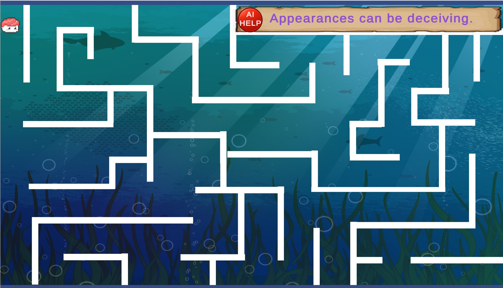
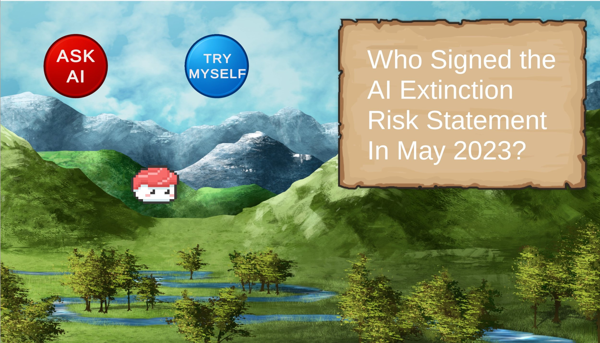
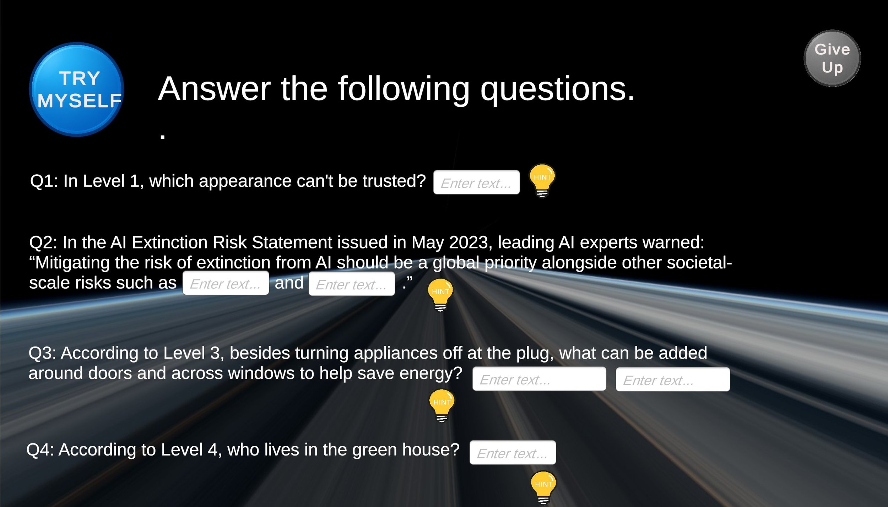
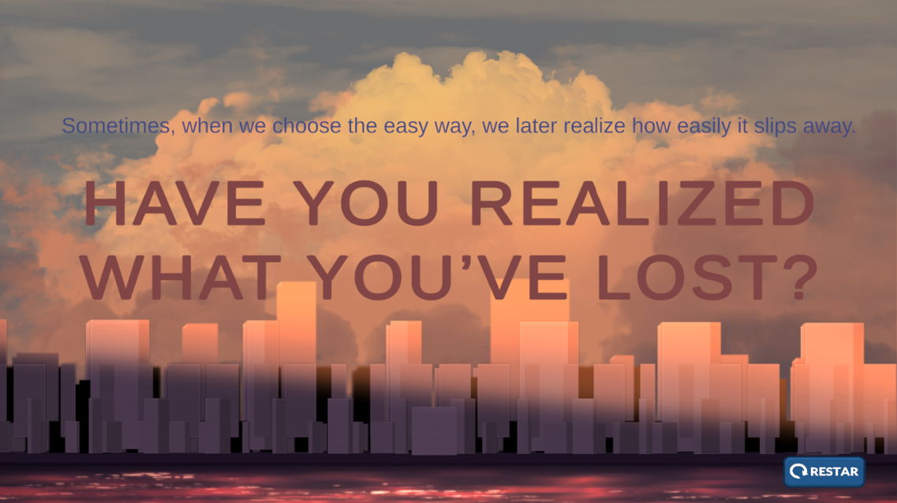

The AI Dependency Trap
A speculative game about what we lose when we let AI think for us.
ROLE
Sole Designer & Researcher
TIMELINE
MSc Semester Project· 4 months · 2025
TOOLS
Unity · Critical Thinking
Demo
This five-level interactive game invites players into a light-hearted yet thought-provoking experience that explores how our growing reliance on AI might impact core human abilities. By mapping each level to a fundamental human capability, the project uses playful interactive elements to encourage meaningful reflection on the risks of technological overdependence.
OVERVIEW
Each level represents a human capability; AI risks eroding cognition, reading, practical knowledge, reasoning, and learning.
The biggest design challenge was inviting accessible reflection on AI overreliance without sounding alarmist or anti-technology. To achieve this, the game leverages interactive mechanics, such as “choice,” “interesting questions,” and “animate,” to drive active engagement and deep reflection on consequences. Ultimately, the piece had to deliver real educational value while remaining engaging enough to sustain player interest.
THE CHALLENGE
PROCESS
01 Frame
A Research-through-Design and speculative approach, anchored to the UN Sustainable Development Goal for Quality Education, framed independent thinking as the value at stake in the AI era.
02 Reference
Three design-fiction precedents shaped the work: The Substitute (replacement vs. preservation), WALL-E (a hopeful, non-didactic tone) and United Micro Kingdoms (sound and colour to steer perception).
03 Design
Each of the five levels embodies a capability: cognition (maze), reading, practical knowledge, reasoning (Einstein's Puzzle), and learning. In levels 1-4, players choose: a tempting red "ask AI" button for an instant answer, or a calm blue "solve it yourself" path with hints.
04 Build
Built in Unity with deliberate sensory cues- saturated, playful visuals, a low warning tone on the AI button, an encouraging tone on self-solving - culminating in a final level where no AI help exists and players rely only on what they retained.
DESIGN DECISIONS


Levels 1–4: Bright Guidance & Contrast
Atmosphere: Saturated colours create a light-hearted, engaging environment.
AI Button: Bright red (danger/temptation) paired with a low warning sound.
Self-Solving Button: Soft blue (calmness/learning) paired with a motivating sound.


The Final Stage: Exploration & Rebirth
Atmosphere: A space theme with a dark background and infinite light rays, symbolising uncertainty and exploration.
Give Up Button: Leads to a desolate, grey failure screen with heavy audio to reinforce the core message of loss.
Restart Button: Provides a fresh start to prevent discouragement and empower players to reclaim control over their learning.
The project culminates in a fully playable experience that uses clever interaction design to bring a critical dilemma to life. By translating the abstract tension between AI overreliance and independent thought into a tangible gameplay loop, the design lets players physically feel the gap between borrowing an answer and owning a skill. The real ingenuity lies in the retry mechanic, transforming the game into a safe space for players to actively reclaim control over their learning.
RESULT
AI can provide answers, but it cannot replace learning.
Designing this piece taught me that experiential learning far outweighs mere explanation. By allowing players to take the convenient AI shortcut and subsequently feel its cost, the game persuades more deeply than any written warning. However, a major limitation is that the core argument was not validated through user testing, leaving its actual effectiveness unknown.
REFLECTION
IF I TOOK IT FURTHER
Validate & Refine Through User Research
Conduct user testing to evaluate engagement and educational impact, using feedback to refine the interface, interaction flow, and reward mechanisms.
Expand Interaction Depth & Gameplay Variation
Introduce strategy-based tasks and more divergent outcomes to go beyond the current maze and multiple-choice formats.
Broaden Thematic Scope & Critical Discussion
Extend the project’s focus to other critical human skills that may decline with the prevalence of AI, such as writing and basic programming.
NEXT PROJECT